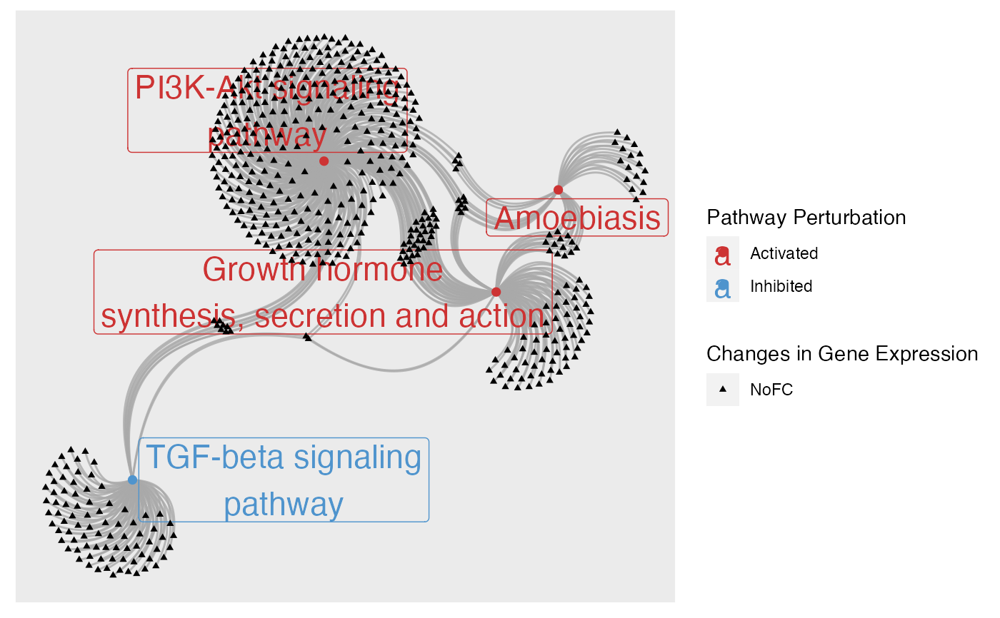
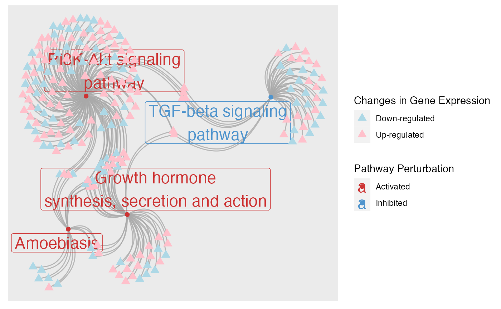
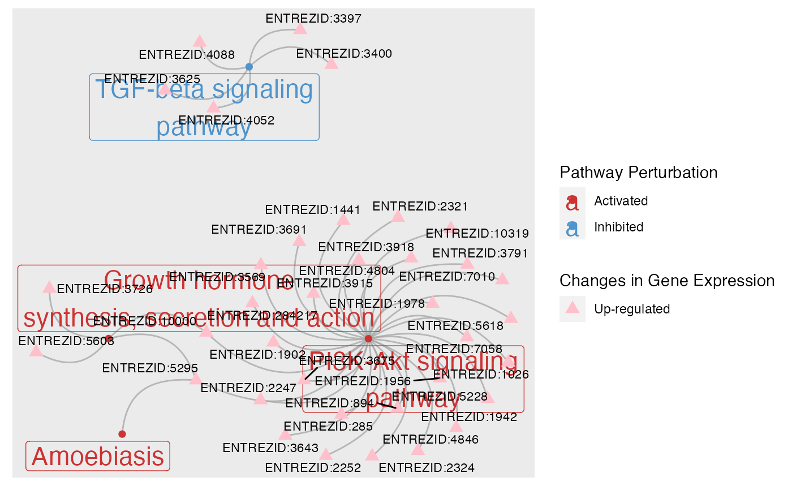
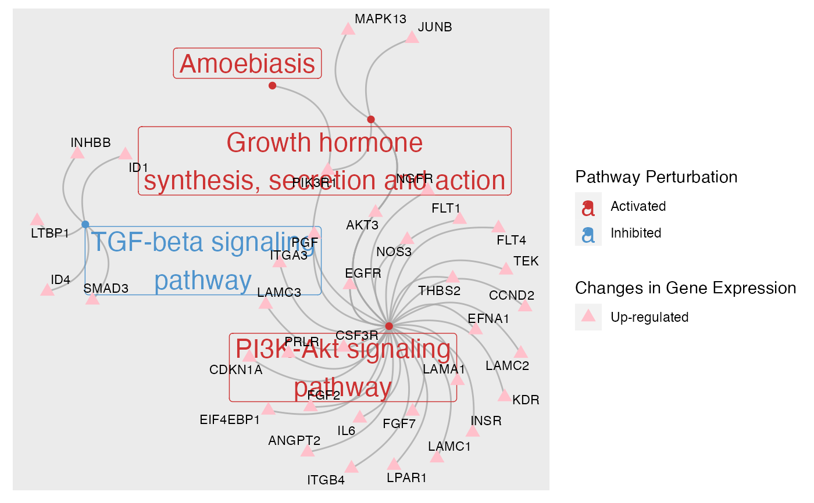

Plot pathways and genes contained in them as a network
plot_gs2gene(
normalisedScores,
gsTopology,
geneFC = NULL,
mapEntrezID = NULL,
colorGS_By = c("robustZ", "pvalue"),
foldGSname = TRUE,
foldafter = 2,
layout = "fr",
edgeAlpha = 0.8,
upGS_col = "brown3",
downGS_col = "steelblue3",
upGene_col = "pink",
downGene_col = "lightblue",
GeneNode_size = 3,
GeneNode_shape = 17,
GsNode_size = 2,
GsNode_shape = 16,
label_Gene = TRUE,
GeneName_size = 3,
GsName_size = 6,
gene_lg_title = "Changes in Gene Expression",
gs_lg_title = "Pathway Perturbation",
arc_strength = 0.5
)A data.frame derived from the normalise_by_permu() function. Only gene-sets of interest should be included
List of pathway topology matrices generated using function retrieve_topology()
An optional named vector of pathways' fold changes
Optional. A data.frame matching genes' entrez ID to other identifier. Must contain 2 columns: "entrezid","mapTo"
Choose to color nodes by robustZ or pvalue. A column must exist in the normalisedScores data.frame
for the chosen parameter
logical. Should long gene-set names be folded into two lines
The number of words after which gene-set names should be folded. Defaulted to 2
The layout algorithm to apply. Accept all layout supported by igraph.
Transparency of edges. Default to 0.8
Color for activated gene-sets. Only applicable if colorGS_By is set to be "robustZ"
Color for inhibited gene-sets. Only applicable if colorGS_By is set to be "robustZ"
Color for up-regulated genes. Only applicable if geneFC is not NULL
Color for down-regulated genes. Only applicable if geneFC is not NULL
Size for gene nodes
Shape for gene nodes
Size for gene-set nodes
Shape for gene nodes
logical. Should gene name be plotted
Size of gene name label
Size of gene-set name label
character. Legend for gene nodes color
character. Legend for gene-set nodes color
The bend of edges. 1 approximates a halfcircle while 0 will give a straight line.
A ggplot2 object
Taking the perturbation scores of a list of gene-sets derived from normalise_by_permu(), this function matches gene-set to
their associated genes by utilizing information from pathway topology matrices.
It's optional to provide genes' logFCs as a named vector, where the names must be genes' entrez ID in the format of "ENTREZID:XXXX".
This is because pathway topology matrices retrieved through retrieve_topology() alwyas use entrez ID as identifiers. However, it might
not be very informative to label genes with their entrez ID. So users can also choose to proivde a mapEntrezID data.frame to match
genes' entrez ID to their chosen identifiers. The data.frame should contain two columns: "entrezid" and "mapTo".If geneFC is provided,
gene nodes will be colored by changes in direction. Otherwise, all gene nodes will be black.
Since some gene-sets could contain hundreds of genes, it is not recommended to plot all of those genes. If mapEntrezID data.frame is provided,
only genes included in that data.frame will be used in the plot. Consider filter for genes with highest magnitude of changes. If all pathway genes
have to be plotted, consider setting label_Gene to FALSE to turn off plotting all gene names.
load(system.file("extdata", "gsTopology.rda", package = "sSNAPPY"))
load(system.file("extdata", "normalisedScores.rda", package = "sSNAPPY"))
#Subset pathways significantly perturbed in sample R5020_N2_48
subset <- dplyr::filter(normalisedScores, adjPvalue < 0.05, sample == "R5020_N2_48")
# Color gene-sets nodes by robust z-scores.
plot_gs2gene(subset, gsTopology, colorGS_By = "robustZ", label_Gene = FALSE,
GeneNode_size = 1)

# When genes' fold-changes are not provided, gene nodes are colored in black.
# To color genes by their directions of changes, firstly compute genes' single-sample logFCs
data(logCPM_example)
data(metadata_example)
ls <- weight_ss_fc(logCPM_example, metadata = metadata_example,
factor = "patient", control = "Vehicle")
# Provide fold-changes of sample R5020_N2_48
plot_gs2gene(subset, gsTopology, geneFC = ls$logFC[,"R5020_N2_48"], colorGS_By = "robustZ",
label_Gene = FALSE)

# There are still a large number of genes, making the plot cumbersome. There only fold-changes of
# genes with top 500 absolute fold-changes are provide so only pathway genes in that list of 500
# genes were plotted.
FC <- sort(abs(ls$logFC[,"R5020_N2_48"]), decreasing = TRUE)[1:500]
plot_gs2gene(subset, gsTopology, geneFC = FC, colorGS_By = "robustZ")

# To make the gene labels more informative, map genes' entrez id to chosen identifiers.
load(system.file("extdata", "entrez2name.rda", package = "sSNAPPY"))
plot_gs2gene(subset, gsTopology, geneFC = FC, mapEntrezID = entrez2name, colorGS_By = "robustZ")
